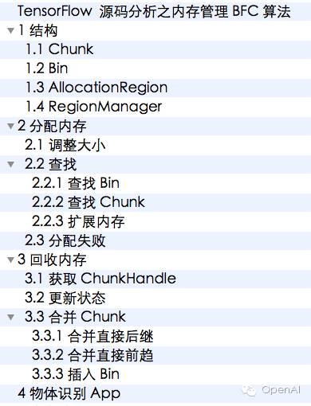
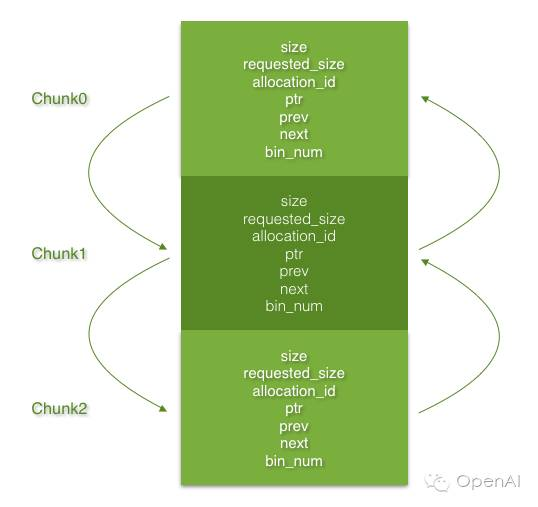
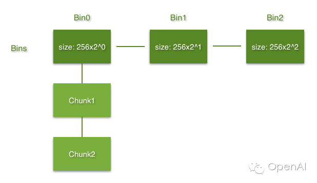

TensorFlow 源码分析之内存管理BFC算法
目录

TensorFlow的内存分配器实现了一个叫做best-fitwith coalescing（BFC）的算法，它本质上是Doug Lea's malloc（dlmalloc）的一个非常简单的版本。
1 结构
1.1 Chunk
整个内存空间由一个按基址升序排列的Chunk双向链表来表示，它们的直接前趋和后继必须在地址连续的内存空间。Chunk结构体里含有实际大小、请求大小、是否被占用、基址、直接前趋、直接后继、Bin索引等信息，如图1所示。

图1
1.2 Bin
Bin是一个拥有相似大小的空闲Chunk的集合。集合里的Chunksize >= Bin size，并且Chunk按size和基址升序排列。
所有Bin由一个Bins集合管理，Bins的结构如图2所示。

图2
1.3 AllocationRegion
AllocationRegion给一个连续的内存区域做指针到ChunkHandle的映射。
1.4 RegionManager
RegionManager聚集了一个或多个AllocationRegion，并提供一个从指针到基础ChunkHandle的间接层，这个间接层可在多个不连续的内存区域进行分配。
2 分配内存
2.1 调整大小
将每次分配的内存大小调整为kMinAllocationSize的N倍，这样所有内存地址都是很好地按字节对齐了。
// file: ./core/common_runtime/bfc_allocator.h
228 size_t BFCAllocator::RoundedBytes(size_t bytes) {
229 size_t rounded_bytes =
230 (kMinAllocationSize *
231 ((bytes + kMinAllocationSize - 1) /kMinAllocationSize));
232 DCHECK_EQ(size_t{0}, rounded_bytes % kMinAllocationSize);
233 return rounded_bytes;
234 }
2.2 查找
2.2.1 查找Bin
Bin size是256的2^N倍。372行先将分配内存的字节数右移8位，然后把结果用在373行，计算出的二进制有效位数即为Bin在Bins中的索引。
Bin size是256的2^N倍。372行先将分配内存的字节数右移8位，然后把结果用在373行，计算出的二进制有效位数即为Bin在Bins中的索引。
// file: ./core/common_runtime/bfc_allocator.cc
249 BinNum bin_num = BinNumForSize(rounded_bytes);
351 inlineint Log2FloorNonZero(uint64 n) {
352 #ifdefined(__GNUC__)
353 return63 ^ __builtin_clzll(n);
354 #else
355 int r = 0;
356 while (n > 0) {
357 r++;
358 n >>= 1;
359 }
360 return r;
361 #endif
362 }
368 size_t BinNumToSize(BinNum index) {
369 returnstatic_cast<size_t>(256) << index;
370 }
371 BinNum BinNumForSize(size_t bytes) {
372 uint64 v = std::max<size_t>(bytes, 256) >> kMinAllocationBits;
373 int b = std::min(kNumBins - 1, Log2FloorNonZero(v));
374 return b;
375 }
2.2.2 查找Chunk
（1）加锁：
251 mutex_lock l(lock_);
（2）从之前得到的Bin索引开始，查找合适的空闲Chunk：
287 const BFCAllocator::ChunkHandle h = (*citer);
288 BFCAllocator::Chunk* chunk = ChunkFromHandle(h);
（3）将找到的Chunk从Bin中移除：
293 RemoveFreeChunkIterFromBin(&b->free_chunks, citer);
439 void BFCAllocator::RemoveFreeChunkIterFromBin(
440 BFCAllocator::Bin::FreeChunkSet*free_chunks,
441 const BFCAllocator::Bin::FreeChunkSet::iterator& citer) {
442 ChunkHandle h = *citer;
443 Chunk* c = ChunkFromHandle(h);
444 CHECK(!c->in_use() &&(c->bin_num != kInvalidBinNum));
445 free_chunks->erase(citer);
446 c->bin_num = kInvalidBinNum;
447 }
（4）拆分Chunk：
如果Chunk的大小大于等于申请内存大小的2倍，那么将该Chunk拆分成2个：第一个Chunk的大小等于申请内存大小，第二个Chunk作为它的直接后继。
300 if (chunk->size >= rounded_bytes * 2) {
301 SplitChunk(h, rounded_bytes);
302 chunk = ChunkFromHandle(h);
303 }
332 void BFCAllocator::SplitChunk(BFCAllocator::ChunkHandle h, size_t num_bytes) {
...
340 BFCAllocator::Chunk* new_chunk = ChunkFromHandle(h_new_chunk);
341 new_chunk->ptr = static_cast<void*>(static_cast<char*>(c->ptr) + num_bytes);
/* 保存新Chunk的基址到ChunkHandle的映射 */
342 region_manager_.set_handle(new_chunk->ptr, h_new_chunk);
...
351 //Maintain the pointers.
352 // c<-> c_neighbor becomes
353 // c<-> new_chunk <-> c_neighbor
354 BFCAllocator::ChunkHandle h_neighbor = c->next;
355 new_chunk->prev = h;
356 new_chunk->next = h_neighbor;
357 c->next = h_new_chunk;
358 if (h_neighbor != kInvalidChunkHandle) {
359 Chunk* c_neighbor = ChunkFromHandle(h_neighbor);
360 c_neighbor->prev = h_new_chunk;
361 }
364 InsertFreeChunkIntoBin(h_new_chunk);
365 }
（5）修改Chunk的请求大小、分配ID（标记Chunk被占用）：
307 chunk->requested_size = num_bytes;
310 chunk->allocation_id =next_allocation_id_++;
（6）更新统计；
（7）成功时返回找到的Chunk指针，失败时返回空指针。
2.2.3 扩展内存
如果查找失败，那么扩展内存，然后再查找合适的空闲Chunk。
（1）已占用的加上申请的内存大小，超过最大内存限制时，返回失败；
（2）循环将当前区域可分配的内存扩充1倍，直到大于等于申请的内存大小：
97 bool increased_allocation = false;
98 while (rounded_bytes> curr_region_allocation_bytes_) {
99 curr_region_allocation_bytes_ *= 2;
100 increased_allocation = true;
101 }
（3）从内存池里分配内存，如果失败，尝试分配申请内存大小的90%。一直重复，直到分配成功或可用内存不足：
110 staticconstexprfloat kBackpedalFactor = 0.9;
112 // Tryallocating less memory.
113 bytes = RoundedBytes(bytes *kBackpedalFactor);
114 while (mem_addr == nullptr && bytes > rounded_bytes) {
115 mem_addr = suballocator_->Alloc(32, bytes);
116 bytes = RoundedBytes(bytes *kBackpedalFactor);
117 }
118 }
（4）给分配的内存添加AllocationRegion，然后创建一个空闲Chunk，插入Bin中：
138 region_manager_.AddAllocationRegion(mem_addr,bytes);
150 region_manager_.set_handle(c->ptr, h);
157 InsertFreeChunkIntoBin(h);
（5）再次查找Chunk。
2.3 分配失败
可用内存不足导致分配失败时，10秒后重试一次，然后返回结果。
3 回收内存
3.1 获取ChunkHandle
先加锁，然后从RegionManager的指针到ChunkHandle的映射关系中得到ChunkHandle。
377 mutex_lock l(lock_);
380 BFCAllocator::ChunkHandle h = region_manager_.get_handle(ptr);
381 CHECK(h != kInvalidChunkHandle);
3.2 更新状态
将Chunk标记为空闲，然后把总占用的内存量减去Chunk的大小。
3.3 合并Chunk
3.3.1 合并直接后继
如果直接后继Chunk空闲，那么合并它们。
（1）将直接后继从Bin中移除；
（2）把它的直接后继作为当前Chunk的新直接后继；
（3）修改它的直接后继的直接前趋；
（4）将当前Chunk加上它的内存大小；
（5）删除它。
405 // c1<-> c2 <-> c3 should become
406 // c1 <-> c3
481 RemoveFreeChunkFromBin(c->next);
482 Merge(h, ChunkFromHandle(h)->next);
3.3.2 合并直接前趋
如果直接前趋Chunk空闲，那么合并它们。
（1）将直接前趋从Bin中移除；
（2）把当前Chunk的直接后继作为它的新直接后继；
（3）修它的新直接后继的直接前趋；
（4）将它加上当前Chunk的内存大小；
（5）删除当前Chunk。
497 RemoveFreeChunkFromBin(c->prev);
498 Merge(ChunkFromHandle(h)->prev, h);
499 c= ChunkFromHandle(h);
3.3.3 插入Bin
将合并后的空闲Chunk插入Bin。
503 InsertFreeChunkIntoBin(chunk_to_reassign);
关注 DeepReve & OpenAI 微信公众号，获取最新内容